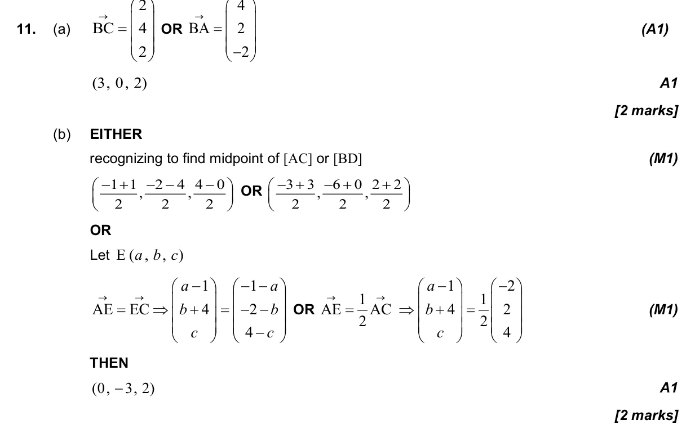
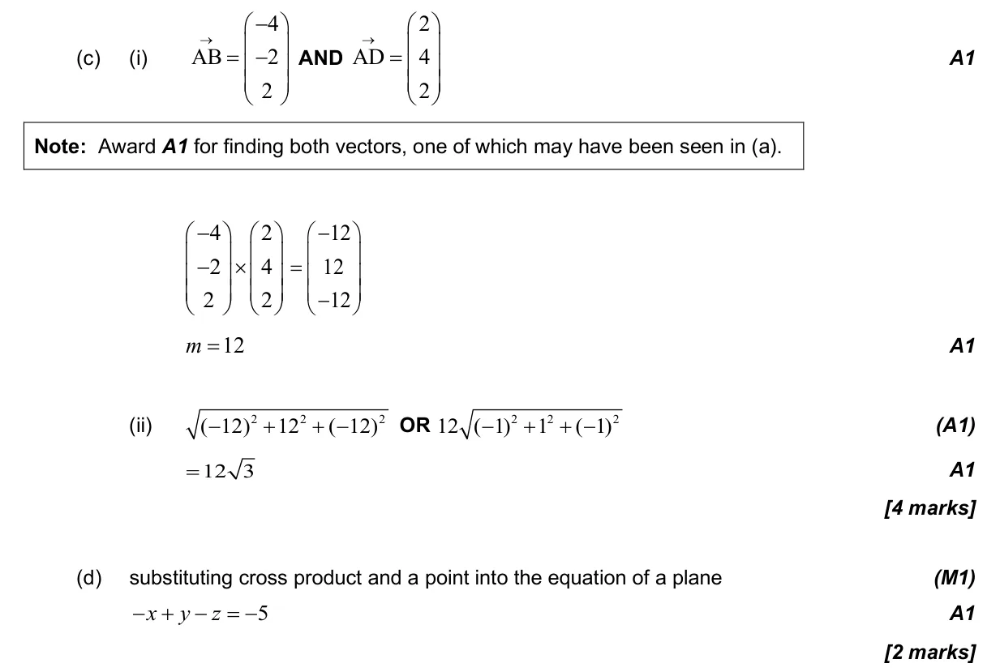
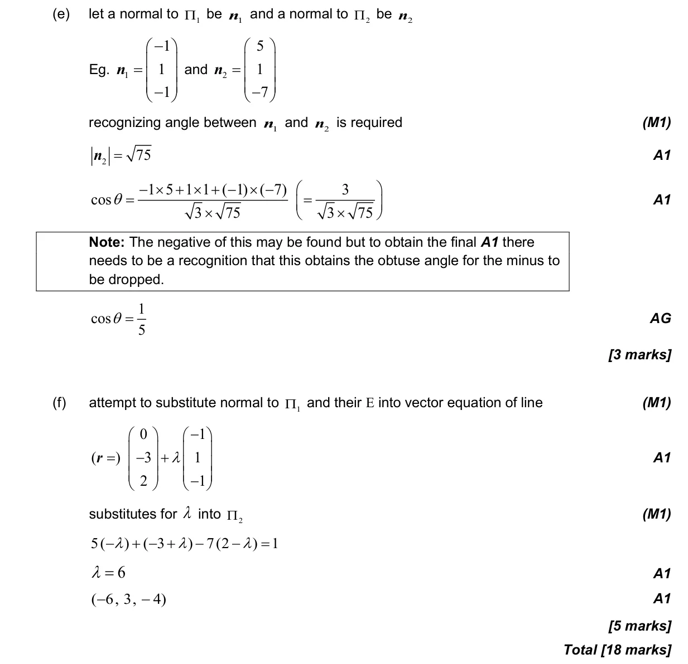

3.18 Intersections and angles between lines and planes3.12 Vectors: concepts, components and algebra3.14 Vector equation of a line in two and three dimensions3.16 The vector product3.17 Vector and Cartesian equations of a plane3.1 3D space, volume, angles, distance and midpoints
Question

Markscheme


